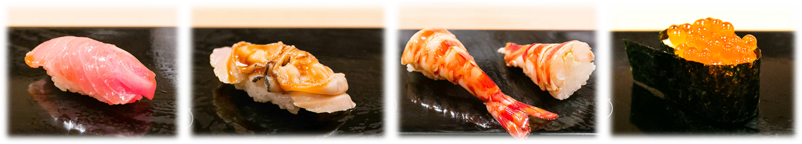
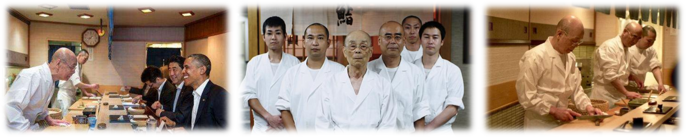

寿司是很多人心目中最典型的日本食物，人们一看见寿司或是瞥见寿司这两个字，立即会联想到日本料理。如今我们最常见的，或者知道这是寿司的，大概主要是一个小饭团上盖上一片鱼或虾的寿司，就是通常在“回转寿司”店看到的那种，这在日语中称为“握寿司”（握り寿司）；或是由紫菜包裹的切成圆块状的，里边往往会有些蔬果、鸡蛋之类，滋味有些酸甜，有时会在“罗森（lawson）”等日系便利店中见到，这在日语中称为“卷寿司”（巻き寿司）。一般人也许以为日本人自古以来就是吃这些食物，其实，这类寿司的历史才不过两百年左右，也就是说，是在江户时代末期的19世纪才最终形成的。那么，是否在这之前日本就没有寿司呢？当然不是。只是“寿司”这一词语的广泛使用，历史并不久远，它是在江户时代由日本人自己创制出来的汉字词语。在权威的词典中，寿司的正确写法应该是“鮨”，这个词在现在的寿司店中很常用，更古老一点的写法是“鲊”，现在已不多见，但发音都是“sushi”。无疑，这两个汉字词语来自中国。其实，最初的寿司（写作“鲊”或“鮨”），无论是制作方法还是形态、滋味，都与今日的寿司大相径庭，而演变到今日的状态，也决非一朝一夕。

20世纪，尤其是20世纪60年代以后，包括寿司在内的日本料理开始传向海外。日本饮食在美国人心目中是清洁、新鲜、低脂肪、低胆固醇的健康食品，虽然烤肉、拉面、铁板烧（其实这些都不是日本的传统饮食）也吸引了不少食客，但最受人们欢迎的是寿司。对美国人而言，寿司是最富有日本情调的食品，鲜鱼和米饭是最健康的食物，因此在美国卖得最好的日本食品是寿司，店家数最多的也是“寿司屋”，以至于在中国人和韩国人开的餐馆中竟然也有卖寿司的，大型超市内的熟食部也陈列着寿司，甚至在比较富裕的“雅皮”阶层当中，在寿司店内约会成了一种时髦。2005年底出版、由池泽康撰写的《美国日本饮食词语》中，位居榜首的无疑是“寿司”。
不过，在美国出售的大部分寿司，已经不是如今日本寿司中最为常见的“握寿司”了，而是处于相对次要地位的“卷寿司”，并且这“卷寿司”也不同于日本本土。最著名的是一种称为“加利福尼亚卷”（California roll）的寿司，用的材料主要是鳄梨、蟹肉、黄瓜，其他还有“龙卷”（Dragon roll）、“费城卷”（Philadelphia roll）等等，都是本土日本人从来没有见过的。当然，创造出这些新式日本料理的不是美国人，而是在美国的日本人。
小野二郎（1925～），全球最年长的米其林三星寿司大厨，纪录片《寿司之神》的主角:
食材买来之后，无论是米饭还是鱼虾，都有口感最为丰富鲜美的时刻，而小野二郎一生都在苛刻地追求让各种美味在最好的时刻相会。
先从用来做军舰卷的一枚简单的海苔开始，看看“寿司之神”的执着吧。小野二郎用的是东京湾产的海苔，每天早晨用备长炭[1]对海苔进行烘烤。使用普通的炭，有可能会因为其火焰温度过高导致海苔燃烧；而使用液化气，海苔会过多吸收水分，不能烤出香脆的口感。在特制的铁丝网上来回扫动海苔的两面，按照从四周到中央的顺序烤制。当海苔从黑色变成鲜艳的墨绿色，隐约散发出淡淡的香气时，烘烤工作就完成了。整个过程中要时刻防止海苔燃烧，同时还要保证每个部位都被烘烤到，真是需要娴熟的手法。海苔之外的其他食材也要经过仔细加工：金枪鱼切块之后，用给水纸卷好，再用普通纸张包裹，放入塑料袋后埋入冰中5天，鱼肉就会成熟，变得软嫩，这个过程叫作“醒”；当天新买的章鱼会被养起来，从上菜前一小时开始不断进行揉搓按摩，之后在章鱼原有的体温上撒上粗盐上桌；寿司饭在煮熟后小心保存，确保在上桌时正好同人的体温相同……“寿司之神”对最基本细节的严苛无人能及，甚至让人觉得这不是在做饭，简直就是在做精细的科学实验。
除了对细节的苛求，小野二郎也会认真观察客人，提供最贴心的服务。他会提前记住面前10张椅子上的10个人，根据性别的不同略微调整寿司的大小；根据客人是用筷子还是直接用手的不同习惯，决定握寿司的力度（在理想状态下，寿司饭的外层较为紧实，入口前不会散掉，而内里则相对松软，味道会更快地在口中散开）；如果你是左撇子，他还会在你夹起第一个寿司时注意到，然后第二个寿司就会放在你的左手边……
“数寄屋桥二郎”只做20个一套的寿司套餐，定价30 000日元（合1 700元人民币），而且不能点单，小野二郎做什么你吃什么。客人要跟着二郎做寿司的节奏吃寿司，他做好一个放在你面前，你最好立即就吃掉，否则“寿司之神”会不高兴，因为这把他辛苦追求的转瞬即逝的终极美味浪费了。而跟着二郎的节奏，20个寿司大概15分钟就能吃完，30 000日元就这么下肚了。很多客人在店里都会被“寿司之神”的强大气场笼罩，不由自主地紧张，手心出汗，连去过多次的老顾客也是一样。最后，预订只有指定的酒店才有资格，不接受个人预订。世界上可能只有一家这么奇葩的寿司店了吧。但是，“寿司之神”是日本的国宝级大厨，能品尝到他亲手做的寿司是很多吃货的终极梦想，毕竟谁不想尝尝日本首相招待美国总统的国宴呢？小野二郎的寿司，毫无疑问成了日本料理的名片。

更多